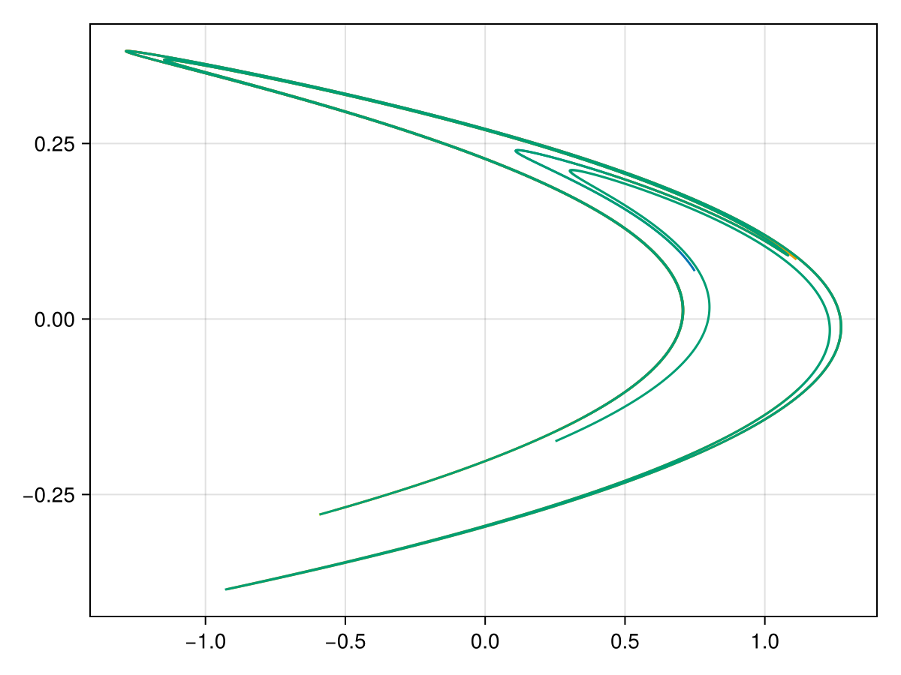
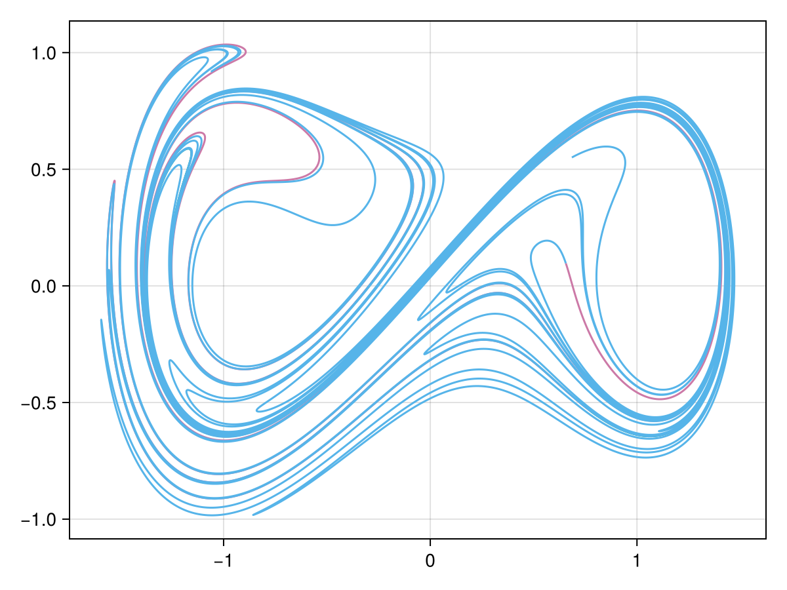
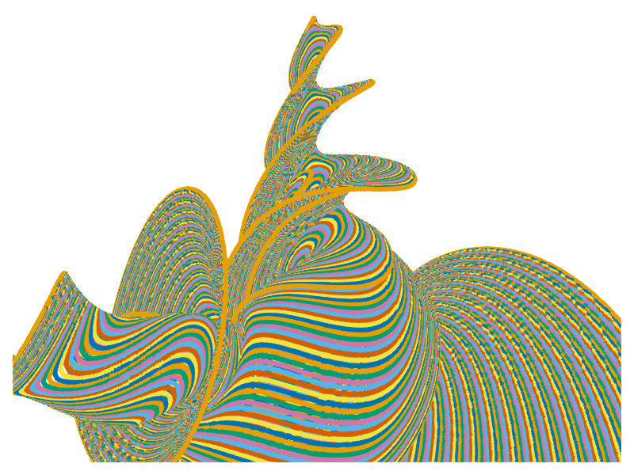

Examples
Unstable manifold of Henon map
Consider the Henon map:
\[\begin{aligned} x'&=1-\alpha x^2+y,\\ y'&=\beta x, \end{aligned}\]
where $\alpha=1.4,\beta=0.3$. This map has a saddle located at $(0.6313544770895048, 0.18940634312685142)$, and its unstable eigenvector is $(-0.9880577559947047, 0.15408397327012555)$.
To compute the unstable manifolds of the saddle numerically, InvariantManifolds.jl just needs a segment of unstable manifold, whose start point is the saddle. It's resonable to choose a short unstable eigenvector as the segment. You don't have to shorten the eigenvector started at the saddle yourself. We provide a function segment to do this automatically. The segment can generate equal distributed n points at one point, with given length and direction.
using InvariantManifolds, StaticArrays
function henonmap(x, p)
y1 = 1 - p[1] * x[1]^2 + x[2]
y2 = p[2] * x[1]
SA[y1, y2]
end
henonmap2(x, p)=henonmap(henonmap(x, p), p)
# For technical reason, we have to use the double iteration of the map, since the eigenvalue is less than -1.
seg = segment(SA[0.6313544770895048, 0.18940634312685142], SA[-0.9880577559947047, 0.15408397327012555], 150, 0.01)
result = generate_curves(henonmap2, SA[1.4, 0.3], seg, 0.001, 8)This package does not provide any function to plot the manifolds. However, it's simple to plot it using the stardard julia ploting library.
To do this, just run
using GLMakie
function manifold_plot(v::Vector{IterationCurve})
figure = Figure()
axes = Axis(figure[1,1])
for k in eachindex(v)
data = v[k].pcurve.u
lines!(axes, first.(data), last.(data))
end
figure
end
manifold_plot(result)
Unstable manifold of the periodic perturbed system:
Consider the Duffing equation with periodic perturbation:
\[\begin{aligned} \dot{x}&=y,\\ \dot{y}&=x-x^3+\gamma \cos(t). \end{aligned}\]
When $\gamma=0$, the system has a saddle located at $(0,0)$. After the small periodic perturbation, this saddle becomes a saddle periodic orbit, i.e., a saddle of the map $T:x\mapsto \phi(X,2\pi,0)$, where $\phi(X,t,t_0)$ is the solution of system with initial condition $X(t_0)=X\in\mathbb{R}^2$. Fortunately, we can use the solution of the variational equation to get the jacobian matrix of $T$. The map $T$'s saddle's location and unstable direction can also be obtained numerically.
using InvariantManifolds, LinearAlgebra, StaticArrays, OrdinaryDiffEq, GLMakie
# Duffing Equation
f(x, p, t) = SA[x[2], x[1] - x[1]^3 + p[1]*cos(t)]
# First find the fixed point and its unstable direction by using the Newton iteration.
function timemap(x,p)
prob = ODEProblem{false}(f, x, (0.0, 2pi), p)
solve(prob, Vern9())[end]
end
# Solving the variational equation to get the jacobian matrix.
function jac(x, p)
prob = ODEProblem{false}(f, x, (0.0, 2pi), p)
sol = solve(prob, Vern9())
function df(x, p, t)
SA[0 1; 1-3*(sol(t)[1])^2 0] * x
end
ii = SA[1.0 0.0; 0.0 1.0]
nprob = ODEProblem{false}(df, ii, (0.0, 2pi), p)
solve(nprob, Vern9())[end]
end
# Newton's iteration to get the saddle's location.
function newton(x, p; n=100, atol=1e-8)
xn = x - inv(jac(x, p) - I) * (timemap(x, p) - x)
data = typeof(x)[x, xn]
i = 1
while norm(data[2] - data[1]) > atol && i <= n
data[1] = data[2]
data[2] = data[1] - inv(jac(data[1], p) - I) * (timemap(data[1], p) - data[1])
i = i + 1
end
if norm(data[2] - data[1]) < atol
println("Fixed point found successfully:")
data[2]
else
println("Failed to find a fixed point after $n times iterations. The last point is:")
data[2]
end
end
function manifold_plot(v)
figure = Figure()
axes = Axis(figure[1,1])
for k in eachindex(v)
data = v[k].pcurve.u
lines!(axes, first.(data), last.(data))
end
figure
end
para = [0.1]
fixedpoint = newton(SA[-0.05, 0.0], para)
unstable_direction = eigen(jac(fixedpoint, para)).vectors[:, 2]
seg = segment(fixedpoint, unstable_direction, 150, 0.01)
result = generate_curves(timemap, para, seg, 0.002, 3)
manifold_plot(result)
Lorenz manifold
In this example, we will consider the well known Lorenz's equation. With classical parameters, the fixed point origin has two linear independent stable direction. Hence, there exists a two-dimensional stable manifolds of the origin, the so called Lorenz manifold. The function generate_surface mainly needs two parameter to compute such stable manifolds. The first parameter is the time-$T$-map of the system, where $T<0$. Moreover, the original vector field has to be rescaled to ensure the uniform extension of the flow. The second parameter is the two linear independent stable direction. See the blew codes for more details.
using InvariantManifolds, LinearAlgebra, StaticArrays, OrdinaryDiffEq, GLMakie
# First define the rescaled lorenz vector field and its time-T-map
function lorenz(x, p, t)
σ, ρ, β = p
v = SA[σ*(x[2]-x[1]),
ρ*x[1]-x[2]-x[1]*x[3],
x[1]*x[2]-β*x[3]
]
v / sqrt(1 + norm(v)^2)
end
function lorenz_map(x, p)
prob = ODEProblem{false}(lorenz, x, (0.0, -2.0), p)
sol = solve(prob, Tsit5())
sol[end]
end
function eigenv(p)
σ, ρ, β = p
(SA[0.0, 0.0, 1.0], SA[-(-1 + σ + sqrt(1 - 2 * σ + 4 * ρ * σ + σ^2))/(2*ρ), 1, 0])
end
second(x) = x[2]
function manifold_plot(annulus)
fig = Figure()
axes = LScene(fig[1, 1], show_axis=false,scenekw = (backgroundcolor=:white, clear=true))
for i in eachindex(annulus)
points = annulus[i].outer.pcurve.u
scatter!(axes, first.(points), second.(points), last.(points), fxaa=true)
end
fig
end
para = [10, 28, 9 / 3]
lorenz_manifold = generate_surface(lorenz_map, para, SA[0.0, 0.0, 0.0], eigenv(para)..., 120, 1, 1)
manifold_plot(lorenz_manifold)
Unstable manifold of the piecewise smooth ODE's time-$T$-map
Consider a simple piecewise smooth system:
\[\begin{aligned} \dot{x}&=y,\\ \dot{y}&=f(x) + \epsilon \sin(2\pi t), \end{aligned}\]
where
\[f(x) = \begin{cases} -k_1 & \text{if } x < -d,\\ k_2 & \text{if } -d<x<d,\\ -k_3 & \text{if } x > d. \end{cases}\]
where $k_1,k_2,k_3,d>0$ are positive parameters. We are going to compute the time-1-map' unstable manifolds of saddle located near $(0,0)$ when $\epsilon$ is small.
First, we define a piecewise smooth vector field:
using InvariantManifolds, LinearAlgebra, StaticArrays, OrdinaryDiffEq, GLMakie
f1(x, p, t) = SA[x[2], p[1]*x[1]+p[4]*sin(2pi * t)]
f2(x, p, t) = SA[x[2], -p[2]*x[1]+p[4]*sin(2pi * t)]
f3(x, p, t) = SA[x[2], -p[3]*x[1]+p[4]*sin(2pi * t)]
hyper1(x, p, t) = x[1] - p[5]
hyper2(x, p, t) = x[1] + p[5]
dom1(x, p, t) = -p[5] < x[1] < p[5]
dom2(x, p, t) = x[1] > p[5]
dom3(x, p, t) = x[1] < -p[5]
vectorfield = PiecewiseV([f1, f2, f3], [dom1, dom2, dom3], [hyper1, hyper2])The parameters pass to PiecewiseV are vector fields, their definition domains, and the hyper surfaces separating these domains. See PiecewiseV for more details.
Then we set the information needs when computing the time-1-map:
setup = setmap(vectorfield, (0.0, 1.0), Tsit5(), 2, Float64)See setmap for the meaning of parameters of this function. For small $\epsilon$, the amplitude of the saddle periodic orbit is small so that the orbit is in domain dom1. So we can still using the method of variational equation to compute the saddle's location.
function jac(x,p)
prob = ODEProblem{false}(f1, x, (0.0, 1.0), p)
sol = solve(prob, Vern9())
function df(x, p, t)
SA[0 1; p[1] 0] * x
end
ii = SA[1.0 0.0; 0.0 1.0]
nprob = ODEProblem{false}(df, ii, (0.0, 1.0), p)
solve(nprob, Vern9())[end]
end
function newton(x,p; n=100, atol=1e-8)
xn = x - inv(jac(x,p) - I) * (timemap(x,p) - x)
data = [x, xn]
i = 1
while norm(data[2] - data[1]) > atol && i <= n
data[1] = data[2]
data[2] = data[1] - inv(jac(data[1],p) - I) * (timemap(data[1],p) - data[1])
end
if norm(data[2] - data[1]) < atol
println("Fixed point found successfully:")
data[2]
else
println("Failed to find a fixed point after $n times iterations. The last point is:")
data[2]
end
endThen we define the parameters and try to find the saddle:
para = [2, 5, 5, 0.6, 2, 1]
fixedpoint= newton(SA[0.0, 0.0],para)
unstable_direction = eigen(jac(fixedpoint,para)).vectors[:,2]In a system of PiecewiseV, the parameter should be a vector and always has extra elements in the end. In this example, we only use five parameters $k_1,k_2,k_3,\epsilon,d$. However, you should set it to a six element vector. The last parameter is to switch the vector field, and its value can be arbitrary.
As before, we compute the manifold and plot it using GLMakie. Noting that the data structures of result is slightly different from examples before.
seg = segment(fixedpoint, unstable_direction, 150, 0.05)
result = generate_curves(setup, para, seg, 0.01, 9)
function manifold_plot(result)
fig = Figure()
axes = Axis(fig[1,1])
for k in eachindex(result)
for j in eachindex(result[k])
data=result[k][j].pcurve.u
lines!(axes,first.(data),last.(data))
end
end
fig
end
manifold_plot(result)
Unstable manifold of the impact inverted pendulum's time-$T$-map
Consider an inverted pendulum with two side walls and a small periodic perturbation:
\[\begin{aligned} \dot{x}&= y,\\ \dot{y}&= sin(x) - \epsilon \cos(2\pi t), \end{aligned}\]
When $x=\xi$ or $x=-\xi$, we have $y\rightarrow - ry$.
The procedure for computing such system's manifold is similar with before, we just give codes here:
using InvariantManifolds, LinearAlgebra, StaticArrays, OrdinaryDiffEq, GLMakie
f(x, p, t) = SA[x[2], sin(x[1])-p[1]*cos(2 * pi * t)]
hyper1(x, p, t) = x[1] + p[2]
hyper2(x, p, t) = x[1] - p[2]
rule1(x, p, t) = SA[x[1], -p[3]*x[2]]
rule2(x, p, t) = SA[x[1], -p[3]*x[2]]
vectorfield = BilliardV(f, [hyper1, hyper2], [rule1, rule2])
setup = setmap(vectorfield, (0.0, 1.0), Vern9(), 2, Float64)
# First find the fixed point and its unstable direction
function timemap(x,p)
prob = ODEProblem{false}(f, x, (0.0, 1.0), p)
sol = solve(prob, Vern9())[end]
end
function jac(x, p)
prob = ODEProblem{false}(f, x, (0.0, 1.0), p)
sol = solve(prob, Vern9())
function df(x, p, t)
SA[0 1; cos(sol(t)[1]) 0] * x
end
ii = SA[1.0 0.0; 0.0 1.0]
nprob = ODEProblem{false}(df, ii, (0.0, 1.0), p)
solve(nprob, Vern9())[end]
end
function newton(x, p; n=100, atol=1e-12)
xn = x - inv(jac(x, p) - I) * (timemap(x, p) - x)
data = typeof(x)[x, xn]
i = 1
while norm(data[2] - data[1]) > atol && i <= n
data[1] = data[2]
data[2] = data[1] - inv(jac(data[1], p) - I) * (timemap(data[1], p) - data[1])
i = i + 1
end
if norm(data[2] - data[1]) < atol
println("Fixed point found successfully:")
data[2]
else
println("Failed to find a fixed point after $n times iterations. The last point is:")
data[2]
end
end
para = [0.2, pi / 4, 0.98, 2]
fixedpoint = newton(SA[0.0, 0.0], para)
unstable_direction = eigen(jac(fixedpoint, para)).vectors[:, 2]
seg = segment(fixedpoint, unstable_direction, 150, 0.01)
result = generate_curves(setup, para, seg, 0.001, 11)
function manifold_plot(result)
fig = Figure()
axes = Axis(fig[1,1])
for k in eachindex(result)
for j in eachindex(result[k])
data=result[k][j].pcurve.u
lines!(axes,first.(data),last.(data))
end
end
fig
end
manifold_plot(result)